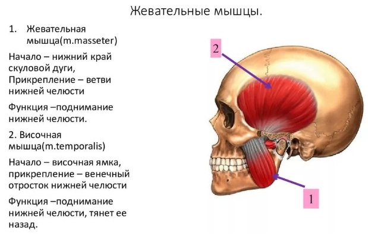

Череп является самым тяжелым "органом" нашего тела, его вес составляет примерно 4 кг. Чтобы удержать такой вес в сбалансированном положении черепу требуется опора. Такой опорой для него служат зубные ряды спереди и первый шейный позвонок - атлант- сзади.
Когда по каким-то причинам высота моляров снижается череп теряет необходимую поддержку в зубных дугах и проседает, а вслед за ним смещается все низлежащие структуры тела. Поэтому так важно сохранять здоровье и изначальную высоту зубных рядов.
То же самое происходит, если мы постоянно держим рот приоткрытым. Грубо говоря, если верхняя челюсть перестает опираться на нижнюю - она опускается вниз, вытягивая и сужая овал лица. Поэтому так важно держать зубы сомкнутыми. Это ни в коем случае не значит, что зубы нужно сжимать, напрягся жевательные мышцы. Напротив, лицо и рот должны быть всегда расслабленны, но зубы при этом должны мягко смыкаться в любой привычной для вас точке.
Жевательные мышцы играют, пожалуй, самую главную роль в эстетике лица. Будучи очень мощными, они обладают всеми свойствами скелетной мускулатуры. В отличие от мимических мышц, которые крепятся одним концом к кости, а другим к коже, жевательные мышцы имеют оба крепления на костях лицевого черепа. Поэтому будучи в спазмированном, укороченном состоянии от постоянного напряжения, они тянут на себя кость нижней челюсти. В результате нижняя челюсть подтягивается вглубь и вверх, "угол молодости" исчезает, овал лица теряет четкость, а мягкие ткани стекают к центру лица и вниз, образуя брыли и носогубки. Кроме того, спазмированные лицевые мышцы это практически всегда отек, поэтому их так важно расслаблять, и жевательные - в первую очередь.
Если вы никогда прежде не занимались своими жевательными мышцами или же они у вас приходят в напряжение при упражнениях, которые будут деваться в рамках этого курса, это означает только то, что мышцы находятся в гипертонусе и берут на себя нагрузку, поэтому с ними необходимо работать- расслаблять. Это очаг хронического напряжения, который, в том числе, препятствует выдвижению максилл на мьюинге. Даю самые простые и действенные упражнения на расслабление жевательных мышц. Их можно делать ежедневно, при необходимости можно даже несколько раз в день. В начале видео о том, как определяем спазм жевательных мышц.
Спазмированные жевательные мышцы могут тянуть на себя скулу, и, соответственно, глаз, поэтому основной упор в этом упражнении делаем на ту сторону, где глаз ниже, и куда скошен рот, эта сторона лица, как правило, меньше.
Если во время мьюинга у вас все же неосознанно напрягается круговая мышца рта, вы сжимаете губы и вам сложно их расслабить (а нам не нужны кисетные морщины и скорбные уголки рта вниз) делаем следующее:
берем пробку, отрезаем половину, чтоб была покороче и полегче, устанавливаем ее между губами (не зубами! не сжимаем! положение губ расслабленное!) и ходим по дому с пробкой, особенно хорошо дела делать с пробкой, когда мы бессознательно сжимаем губы, например, когда убираемся или работаем за компьютером. Я даже в машине такую держу).
Так вы не просто расслабите круговую рта, но и научитесь отслеживать ее напряжение и взять это под контроль. Губы становятся красивее и пухлее уже через полчаса хождения с пробкой, я это знаю точно, потому что напрягать губы -мое слабое место в последние годы.